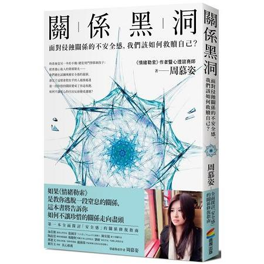
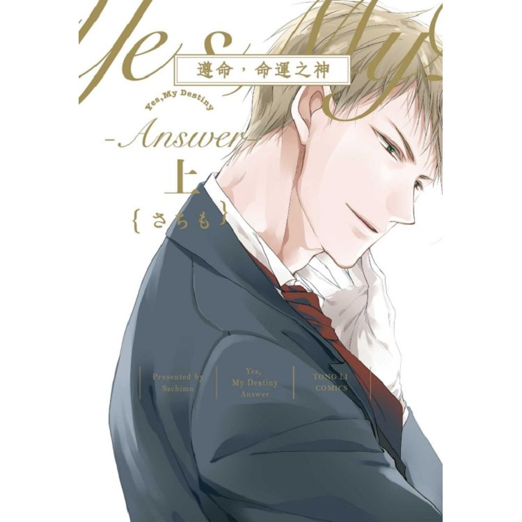

護玄 畢生願望就是將自己所想的故事都能寫完。不論哪種創作都是一件很有趣的事情，希望每個人都能愛護自己心中的創作小小人，讓他們茁壯更美好。 ＊統計時間：2017/12/01-2018/11/30＊作家排名以個人獨立著作為準，合著者不在此列。 已出版作品 - MORE -
藍旗左衽 開始寫小說是為了一圓中學時期的夢想，成名後的寫作目標依舊是寫自己想寫的故事，心無旁騖、不忘初衷。 ＊統計時間：2017/12/01-2018/11/30＊作家排名以個人獨立著作為準，合著者不在此列。 已出版作品 - MORE -
東野圭吾 早期作品多為精巧細緻的本格推理。之後作風逐漸超越推理小說框架，其創作力之旺盛，讓他始終活躍於日本推理小說界的第一線。 ＊統計時間：2017/12/01-2018/11/30＊作家排名以個人獨立著作為準，合著者不在此列。 已出版作品 - MORE -
慕顏歌 半個打字工，半個心理諮商師，四分之一個心靈舞者，一個全心遨遊世界的人。專注於心靈、情感與思辨文字的寫作，偏愛流浪、寫作和思考。 善於以文字揭開人生的真相，精準又不失幽默的文字引起廣大讀者共鳴。 ＊統計時間：2017/12/01-2018/11/30＊作家排名以個人獨立著作為準，合著者不在此列。 已出版作品 - MORE -
笭菁 書寫多變，擅寫靈異、驚悚、愛情、奇幻與勵志。 興趣多變，電影、美食、旅遊、玩樂，愛好自由。 ＊統計時間：2017/12/01-2018/11/30＊作家排名以個人獨立著作為準，合著者不在此列。 已出版作品 - MORE -
Susan Kuang 2015年正式結束職場生涯後，成為一名獨立創業者，實現了生活與工作的完美結合。作為引入「斜槓青年」的第一人，她希望藉由打造一個專業的自我發展空間，幫助人們在豐富生活的同時，迎接更有價值的多職人生。 ＊統計時間：2017/12/01-2018/11/30＊作家排名以個人獨立著作為準，合著者不在此列。 已出版作品 - MORE -
丹．布朗 著有史上閱讀率最高小說《達文西密碼》，以及國際暢銷小說《地獄》、《失落的符號》、《天使與魔鬼》、《大騙局》與《數位密碼》。 ＊統計時間：2017/12/01-2018/11/30＊作家排名以個人獨立著作為準，合著者不在此列。 已出版作品 - MORE -
香草 很不幸正巧選在2月29日降臨地球，因此四年才能迎來一個生日。熱愛寫作、同時卻又充滿惰性，想寫的東西很多很多，每天都在興趣與懶散之間掙扎浮沉的小小作者一隻。 喜歡題材帶有奇幻色彩的文章，也希望筆下的作品能帶給讀者們這種感覺。 ＊統計時間：2017/12/01-2018/11/30＊作家排名以個人獨立著作為準，合著者不在此列。 已出版作品 - MORE -
岸見一郎 京都大學研究所文學研究科博士課程結業。2013年他與古賀史健合著的阿德勒心理學新經典著作《被討厭的勇氣》後，在亞洲各地掀起一股阿德勒心理學風潮，各種語文版本已累計銷售突破350萬冊，並被改編成電視劇和舞台劇。。 ＊統計時間：2017/12/01-2018/11/30＊作家排名以個人獨立著作為準，合著者不在此列。 已出版作品 - MORE -
周慕姿 她相信：我們擁有「選擇的自由」，以及，若能以「真實的自己」面對生命，我們就能掙脫無形的束縛，獲得真正的自由。 對她而言，「接納自己，獲得自由」，是人生最重要的事。 ＊統計時間：2017/12/01-2018/11/30＊作家排名以個人獨立著作為準，合著者不在此列。 已出版作品  - MORE -
老楊的貓頭鷹 用後腦勺盯著這個功利世界的85後貓奴，惜時惜命，喜用炙熱的文字揭穿並非靜好的歲月。不負責疼愛你，只想喚醒你。 ＊統計時間：2017/12/01-2018/11/30＊作家排名以個人獨立著作為準，合著者不在此列。 已出版作品 - MORE -
醉琉璃 九月十二日出生的處女座。 一旦工作忙碌的時候，就會想要打掃房間來逃避現實。 喜歡看鬼片，卻總是會把手指擋在眼前。 每一天的最大願望都是睡到自然醒。 ＊統計時間：2017/12/01-2018/11/30＊作家排名以個人獨立著作為準，合著者不在此列。 已出版作品 - MORE -
さちも 日本BL漫畫家。 作品曾獲「這本BL不得了！2018」第三名殊榮。 代表作有《黑或白》、《綺麗青春》、《遵命，命運之神》等。 ＊統計時間：2017/12/01-2018/11/30＊作家排名以個人獨立著作為準，合著者不在此列。 已出版作品  - MORE -
尾田榮一郎 2014年12月，《ONE PIECE》漫畫在12月底的發行量已達3億2086萬6000冊，因此正式獲得金氏世界紀錄認可為「由單一作者創作發行量最多的漫畫系列」。 2018年獲頒「熊本縣榮譽縣民」。 ＊統計時間：2017/12/01-2018/11/30＊作家排名以個人獨立著作為準，合著者不在此列。 已出版作品 - MORE -
龍應台 高雄大寮的自來水廠裡出生，南部的漁村農村長大。留學美國九年，旅居歐洲十三年，任教於香港九年；台北市首任文化局長、中華民國首任文化部長。是一支獨立的筆——可以燒灼如野火，狂放如江海，也可以溫潤如目送。 ＊統計時間：2017/12/01-2018/11/30＊作家排名以個人獨立著作為準，合著者不在此列。 已出版作品 - MORE -
水泉 玩手機遊戲總會有的，非洲人的悲傷時刻。 不過沒關係，下次會更好。（按下再來一次） ＊統計時間：2017/12/01-2018/11/30＊作家排名以個人獨立著作為準，合著者不在此列。 已出版作品 - MORE -
Misa 該是實際的金牛但腦袋卻充滿幻想。喜歡獵奇及不完美結局，認為悲傷比喜悅停留人心更久，但依然試圖寫出最完美的結局。希望創作的故事能引起共鳴，哪怕只有一點點，只要讓你回憶起時，能勾起微笑或皺了眉頭，那便足夠。 ＊統計時間：2017/12/01-2018/11/30＊作家排名以個人獨立著作為準，合著者不在此列。 已出版作品 - MORE -
橫溝由里 2012年計畫以日本人「喜歡角落」的特性為主題發展角色設計。作者採用的設計原型是學生時代，上課時在筆記本一角畫上的塗鴉。 ＊統計時間：2017/12/01-2018/11/30＊作家排名以個人獨立著作為準，合著者不在此列。 已出版作品 - MORE -
Troll Troll是田中陽子（負責文字，1976年出生）與深澤將秀（負責繪圖，1981年出生）兩位組成的作家搭檔。以屁屁偵探為主角的一系列創作，深獲讀者歡迎，已發展出繪本和讀本兩個系列（中文版皆由遠流出版）。 ＊統計時間：2017/12/01-2018/11/30＊作家排名以個人獨立著作為準，合著者不在此列。 已出版作品 - MORE -